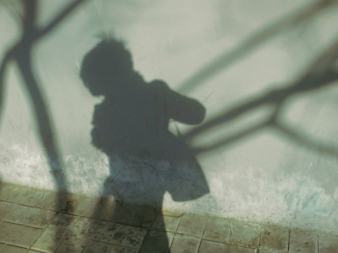

 珍贵的无知而无所畏惧
对于我们所追求的幸福，勇气是一种非常关键的、仅次于聪明睿智的必备素质。
当然，我们无法给予自己这两种素质(到“无动于衷”)——前者我们得之于父亲，而后者遗传自母亲——但是，不管我们具备这两种素质的程度如何，通过决心和练习都可以增进它们。
在这一个“铁造的骰子决定一切”的世界，我们需要铁一般刚强的感觉意识，作为承受命运、防范他人的盔甲武器。
这是因为人的一生就是一场战斗。我们所走的每一步都引起争斗。
伏尔泰说得很对：“在这世上，我们只有挺着剑前行才能取得成功；我们死去的时候，手上仍然紧握着武器。”
因此，一个人如果看见天空——或者只是在地平线上——出现了阴云，就沮丧气馁、怨天尤人，那这个人就是胆怯、懦弱之辈。
我们的格言应该是这样的：“在邪恶面前不要让步，应该勇敢无畏地面对它。”（维吉尔语）
就算是一件有危险的事情，只要它的结局仍然悬而未决，只要还存在得到一个更好结局的可能，那我们就不要胆怯、犹豫，而应该努力抗争。
正如我们只要还看到一小片蓝色的天空，我们就不应对天气感到绝望一样。
的确，我们应该这样说：“就算世界倒塌了下来，一片的废墟也不会改变他的脸色。”
别说生命中得到的各样好处，就算是整个生命，也不值得我们为它如此心惊胆战。
所以，他勇敢地生活，英勇地面对命运的打击。——贺拉斯
但是，这有可能变得过犹不及：因为勇气会酿成冒失放肆。
一定程度的腼腆畏惧对于我们在这一世界的生存是必需的，懦弱只是畏惧超出了限度而已。
他说：“事物的本性使所有的生物都具备了畏惧，这使他们得以躲避灾祸，保存生命。但是，这一本性却不会懂得节制有度，它总是把无用空洞的害怕和那些有益的害怕混合在一起，所有生物（如果我们能够窥见其内心），尤其是人类内心因此都充满了这种大自然所共有的畏惧。”
另外，这种大自然所共有的畏惧的典型特征就是它并不清晰地意识到生发这种畏惧的根据，它对这些根据是假设甚于认识。
的确，万不得已的时候，畏惧本身就成为畏惧的理由了。